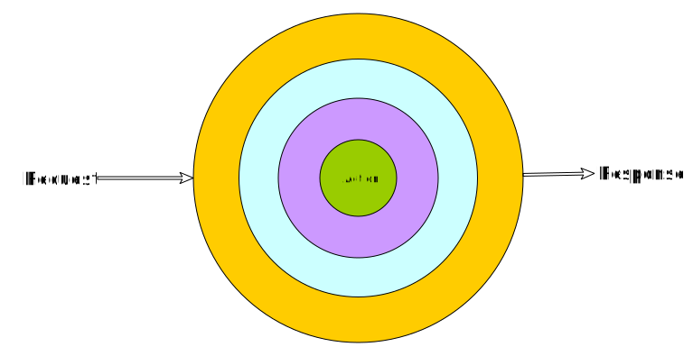

- PHP фреймворк.
- Один из самых популярных.
- Две стабильные ветки.
- Много проектов.
За что любят Yii
- Быстрый.
- Понятный. Отличная документация.
- Много фич.
- Крутая кодогенерация.
- Быстро делать прототипы.
- Active Record.
- Низкий порог входа.
- Сообщество.
За что не любят Yii
- Низкий порог входа.
- Не учит писать хорошо.
- Провоцирует писать плохо.
История Yii
- 2004 — Prado (Qiang Xue, Wei Zhuo).
- 2008 — Yii 1.0.
- 2010 — я вошёл в команду, Yii 1.1, планы на 1.2.
- 2011 — начали Yii 2.
- 2014 — стабильный Yii 2.
- 2015 — уходит Qiang.
- 2016 — планы на 2.1.
- 2018 — early access 2.1, начали Yii 3.
- 2019 — организован фонд.
Что не так было в 2.1?
- Service locator.
- properties, behaviors.
- Форсированное дерево наследования.
- fxp и завязка на клиентсайд.
- Не PSR, хоть и пытался.
- Всё ещё сильно монолитен.
- Всё ещё закрыт от PHP-сообщества.
Практичность
- Высокая производительность.
- Умолчания, но гибкость.
- Ориентированность на практику.
Полезность
- Простое лучше сложного.
- Явное лучше неявного.
- Необходимо быть последовательным.
Зачем?
- Убить service locator.
- От наследования к композиции
- Уйти от нестандартного PHP (accessor, behavior).
- Заложить фундамент на 10 лет вперёд.
- Не ограничивать в выборе архитектуры.
- Поделить ответственность (пакеты).
- Открыть PHP-сообществу.
Зачем-зачем?
- Общий инструмент.
- Быстро начинать проекты.
- Продолжать и поддерживать с нормальным уровнем техдолга.
Пакеты
- Их много (85!).
- Позволяют собирать что нужно.
- Легче поддерживать.
- Можно использовать вне Yii.
PSR
- 1, 12 — стандарт кода.
- 4 — автозагрузка.
- 3 — логгер.
- 16 — кеш.
- 14 — диспетчер событий.
- 7, 15, 17 — HTTP + Middeware + хедлеры.
- 11 — контейнер.
7, 15, 17 — HTTP + Middeware + хедлеры

- Приложение — стэк middleware.
- Роутер — middleware.
- Обработчик роута — стэк middeware.
class MiddlewareDispatcherFactory
{
public function __invoke(ContainerInterface $container)
{
$session = $container->get(SessionMiddleware::class);
$router = $container->get(Router::class);
$errorCatcher = $container->get(ErrorCatcher::class);
$subFolder = $container->get(SubFolder::class);
return new MiddlewareDispatcher([
$errorCatcher,
$session,
$subFolder,
$router,
], $container);
}
}
class RespondingMiddleware implements MiddlewareInterface
{
private $responseFactory;
public function __construct(ResponseFactoryInterface $responseFactory)
{
$this->responseFactory = $responseFactory;
}
public function process(ServerRequestInterface $request, RequestHandlerInterface $handler): ResponseInterface
{
$response = $this->responseFactory->createResponse();
$response->getBody()->write('Hello!');
return $response;
}
}
class ProcessingMiddleware implements MiddlewareInterface
{
public function process(ServerRequestInterface $request, RequestHandlerInterface $handler): ResponseInterface
{
// before other middleware
$response = $handler->handle($request);
// after other middleware
return $response;
}
}
class AppRouterFactory
{
public function __invoke(ContainerInterface $container)
{
$routes = [
Group::create('/user', [
Route::get('[/page-{page:\d+}]', [UserController::class, 'index'])
->name('user/index'),
Route::get('/{login}', [UserController::class, 'profile'])
->name('user/profile'),
]),
];
return (new RouterFactory(new FastRouteFactory(), $routes))($container);
}
}
RoadRunner / Swoole
- RR даёт производительность × 20 по сравнению с FPM.
- Писать нужно по-другому.
- Yii 3 готов работать в RR.
- Но приложение готовым делаете вы.
class PostCard extends Widget
{
private UrlGeneratorInterface $urlGenerator;
public function __construct(UrlGeneratorInterface $urlGenerator)
{
$this->urlGenerator = $urlGenerator;
}
public function index(ArchiveRepository $archiveRepo): Response
{
return $this->render('index', [
'archive' => $archiveRepo->getFullArchive()
]);
}
- Контейнер.
- Middleware.
- Менее важные PSR.
- View / базовый виджет.
- Data.
- Пакеты.
- Интеграция с Cycle.
Пока не готово
- Шаблон приложения.
- Gii / Debug.
- Виджеты.
- data-виджеты.
- Свой DBAL.
- RBAC.
- API.
- Валидаторы.
- Документация.
- Полировка и баги.
Планы
- Полировка и доделки.
- Документация.
- Альфа 1.
- Psalm / Phan / PhpStan.
- Альфа 2.
- Фонд++
- Бета 1.
- Релиз.
- Ифраструктура и сайд-проекты.
Как готовиться к Yii 3?
- Не использовать
Yii::$app.
- Использовать DI-контейнер.
- Выделение доменного слоя и сервисов.
- Выделение репозиториев, не завязываться на AR.
- Не использовать магию.
Как помочь
- Код.
- Review.
- Идеи / обсуждения.
- Управление.
- Документация.
- Фидбэк.
- OpenCollective.
С чего начать?
- yiisoft/yii-demo.
- yiisoft/yii-dev.
- Telegram: @yii3ru.